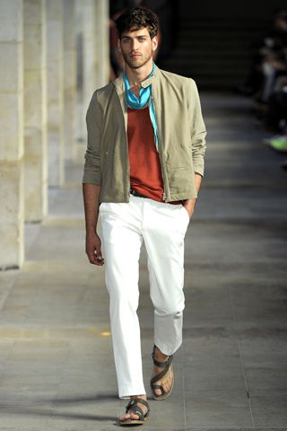

Fashion in the Parisian Culture
| Culture (French) | Culture (English) | Food | Art | Museums | Fashion | Architecture | Festival of Music | Contact Us |
Paris Fashion Week is a highly anticipated event in the fashion industry, featuring over 100 shows from top fashion houses such as Chanel, Christian Dior, and Yves Saint Laurent. The street style during this week reflects the city's effortlessly chic and sophisticated aesthetic, with a mix of classic black-and-white outfits and bold colors. Parisians embrace fashion as a form of self-expression, and this is evident in the playful pattern mixing and statement accessories seen on the streets. The city's fashion culture is deeply rooted in its history, with Paris being home to the industry's first-ever organized fashion week in 1973. The impact of Paris Fashion Week on the city's economy is significant, amounting to €400 million, excluding sales in stores.
The fashion scene in Paris is not only about the high-end designer brands and fashion shows. The city is also known for its unique boutiques, vintage shops, and flea markets, where fashion enthusiasts can find one-of-a-kind pieces to express their individual style. Parisians have a knack for effortlessly combining high-end and affordable pieces to create a polished and sophisticated look. The city's fashion culture is deeply ingrained in its daily life, with fashion being a part of the city's identity and a reflection of its rich history and artistic heritage.